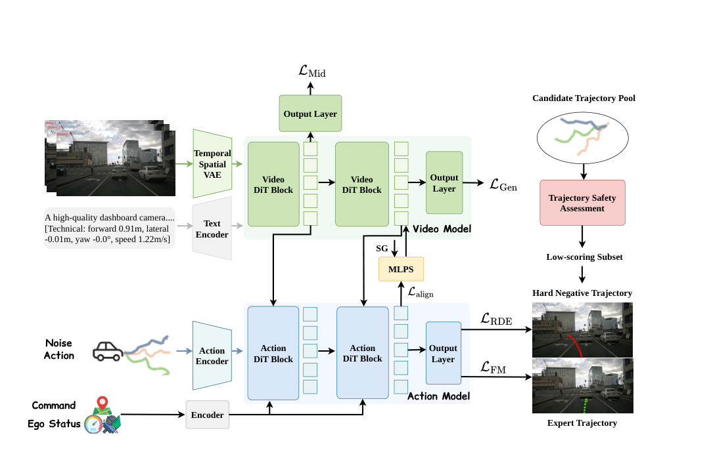

ReWorld：为世界动作模型学习更好的表征
世界模型（World Model）已成为自动驾驶研究的核心方向之一：通过对场景未来演变的建模，为规划提供超越瞬时感知的动态先验。在此背景下， 世界动作模型（World Action Model, WAM） 将生成范式扩展至以动作为条件的未来预测，使得世界模型不仅能做场景仿真，还能更直接地服务于决策。
Read technical articleLong-form notes and generated explanations for papers worth a closer look.

世界模型（World Model）已成为自动驾驶研究的核心方向之一：通过对场景未来演变的建模，为规划提供超越瞬时感知的动态先验。在此背景下， 世界动作模型（World Action Model, WAM） 将生成范式扩展至以动作为条件的未来预测，使得世界模型不仅能做场景仿真，还能更直接地服务于决策。
Read technical article